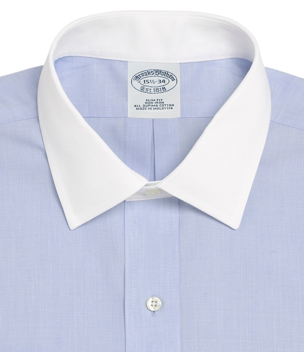
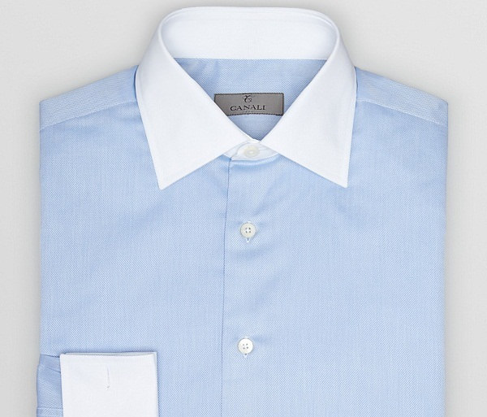
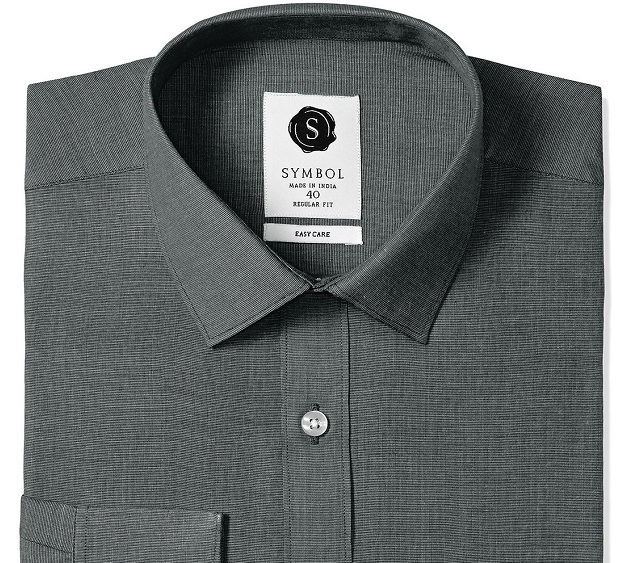
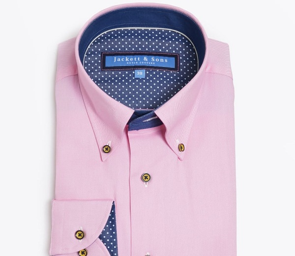
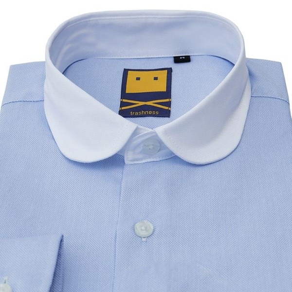
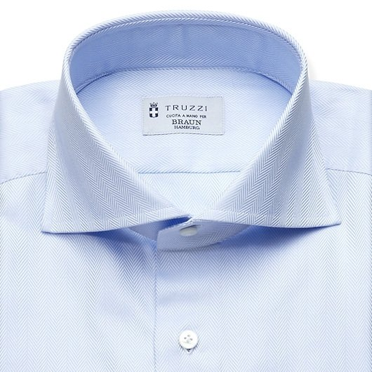
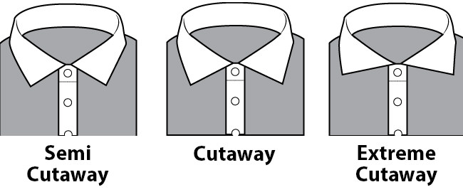
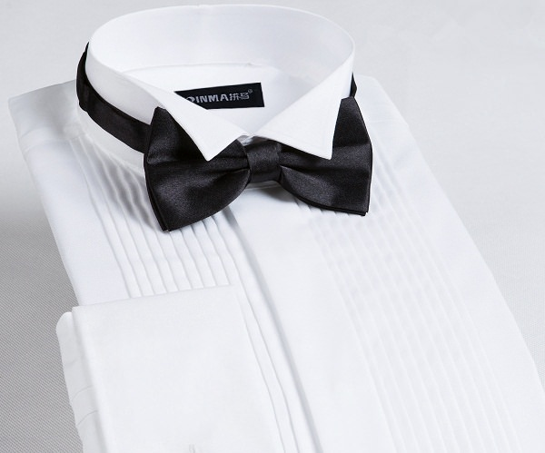
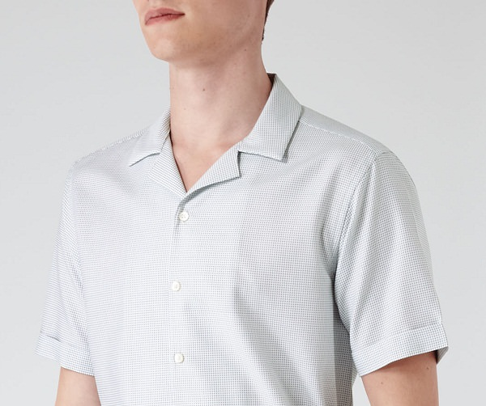
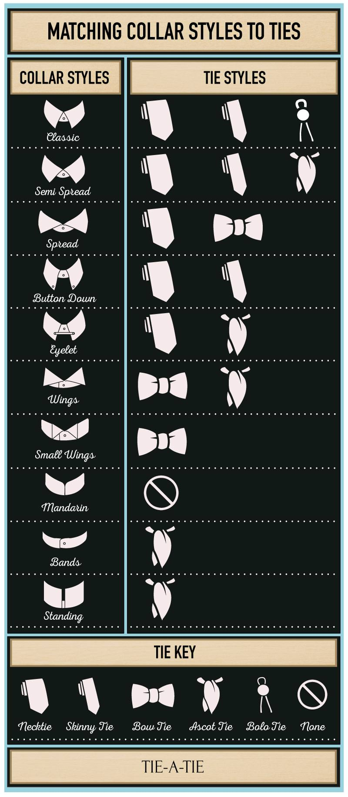

Type of men´s collars
Spread Collar
Spread collar is basic collar type in shirt. With its crisp pointed ends, and the nice spread between the collar points, the spread collar gives great formal looks. Because the collar tips are spaced wide apart, this collar gives you the freedom to wear any type of knot in your necktie, or, if you prefer, you can even not wear a tie. This makes the spread collar the most fuss-free and free type of collar.
Abbreviated Spread Collar
Some people call the abbreviated spread collar as the smarter, sportier and smaller variant of the normal spread type of collar. This is a very versatile type of collar. It can be worn with or without a necktie. It looks best without a tie, with the top button left open, together with a sweater or a casual coat. Wide spread collar shirts are difficult to find online rather we suggest you to tailor it.
Standard collar
The straight point collar is similar to the spread collar except that the spread between the collar leaves is smaller that makes these collars give a more elegant and polished looks. If you prefer slimmer neckties with smaller knot, then this is the perfect type of collar for you.
Button-Down Collar
Simply put, the button-down collar has buttons to fasten the tips of collars to the shirt. The benefit is that the collar points always remain at the right place and in the right shape giving you perfect looks all the time. The buttons also add a dash of casual looks, which makes this collar little less formal as compared to the spread collar or the straight point collar. Therefore, this is perfect for those people who prefer little casual dressing while wanting to balance it with the formal looks.
Golf Collar
The club collar has an interesting history. It was started by an English boarding school as part of school uniform to help their students look different and unique. The rounded points of this collar definitely live up this expectation till date. It is perfect for those who want to subtly stand apart from the crowd and make their own unique style statement.
Cutaway Collar
The cutaway collar is one of the boldest types of collar. The specialty of this type of collar is that its crisp sharp pointed collar points are spaced very wide apart, that makes the collar literally looks horizontal. It is perfect for those people who want to look bold, original, and stylish. But, please be aware that this collar looks awful without a necktie. But, the spread gives you freedom to experiment different knots.
3 Types Of Cutaway Collar
Wingtip Collar
The wingtip collar is the most formal type of collar. It gets its name from the folded out collar points that look like tips of a pair of wings. This collar is designed specifically to be worn with a Tuxedo and a bowtie.
The Cuban collar
The Cuban collar is again one of the casual types of collar. Its signature of this collar is a notch-like design. It is wide and open that gives this collar a relaxed and vacation type of look and feel. This collar is perfect for people who prefer casual clothing or for occasion such as vacations. Just leave the top button open for more laid-back and sporty looks.
